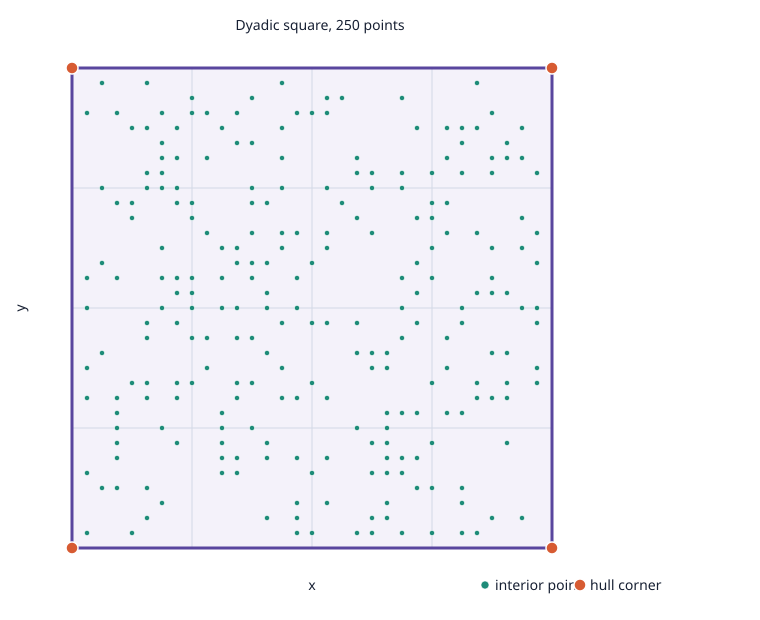

EXP-02 exploratory continuation · source commit 9b53f24e9d2e4f1d7c1ec82150589a4bbb50387a
Performance conclusion: inconclusive. The methods were interleaved for seven measured rounds, but no source-mapped limiter profile is available and this is one small 2D fixture. These timings do not establish a general winner or scalability.
Four unit-square corners plus 246 unique dyadic interior points from LCG seed 0x6d2b79f5. All methods receive identical input SHA256 805fb5e027ee97394494ef3d23123e47c86d31e21de53f4a5c239867204d04b3.

| Method | n | Median call | Range | Reducer complete |
|---|---|---|---|---|
| geometric-quickhull | 7 | 0.549 ms | 0.528–0.905 ms | n/a |
| lp-membership-baseline | 7 | 67.621 ms | 67.237–69.812 ms | 0/7 |
| basis-reuse-related-to-A43 | 7 | 0.749 ms | 0.722–0.825 ms | 7/7 |
| ordered-membership-related-to-A44 | 7 | 67.190 ms | 66.785–68.651 ms | 0/7 |
| A43-certificate-safe-basis-adaptation | 7 | 24.518 ms | 24.266–25.307 ms | 0/7 |
| A44-incremental-LP-farthest-seed | 7 | 27.472 ms | 27.177–30.603 ms | 7/7 |
Each method had one warmup and seven measured calls. Timing excludes workspace creation, independent checking, and JSON output. All 48 captured attempts passed accounting, retained all four expected corners, and received an independent exact represented-binary64 2D finite-hull checker status of verified (5 s, up to 250 points). Incomplete reducer status remains separate from hull validity. A43/A44 are paper-informed adaptations; no faithful Pascal implementation was found.
Host: AMD Ryzen 5 3550H, 8 logical CPUs, Linux x86_64; Release, GCC 16.2.1, C++20, CMake 3.31.6, HiGHS 1.11.0. No source profile was available (perf/strace absent); LP call counts are not a source-function profile. This one fixture does not complete issue #94.
Summary CSV · Raw rows · Clean Release build log · Build record